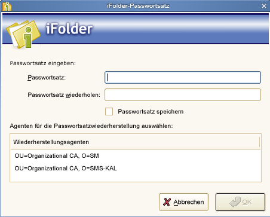
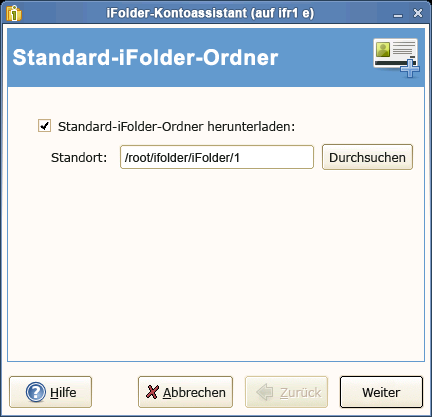
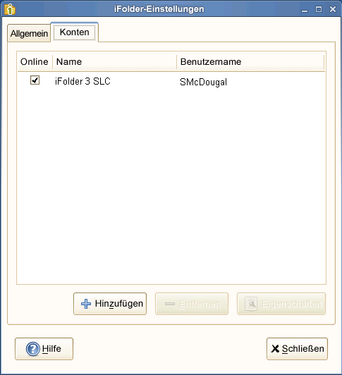
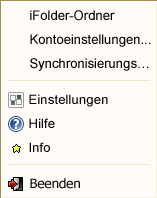

Configuring an iFolder Account
Use the iFolder Account Assistant to add and configure a new account. You must configure at least one iFolder account before you can create iFolders or share iFolders on your system. You can create only one account for any given iFolder host service, but you can have multiple accounts. You can log in separately to each account and be logged in concurrently to multiple accounts.
Multiple users with different local login identities can have iFolders on the same computer. iFolder prompts the active user to set up an account on the first time the iFolder client runs under that local user identity.
IMPORTANT:iFolder 3.7 introduces a new feature, auto-account creation, which helps the iFolder administrator to create and configure an account for you. If your iFolder administrator has enabled auto-account creation, you don’t need to configure an account for yourself. When you start an iFolder for the first time, you are prompted to enter your password. Enter your password and complete configuring the account.
To configure a new account:
-
Access the , using one of the following methods:
-
The first time you start iFolder under your current local login identity, iFolder prompts you to set up an iFolder account. Click to go directly to the .
-
Right-click the iFolder Services
 icon in the notification area, select to open the iFolder Preferences dialog box to the tab, then click to open the .
icon in the notification area, select to open the iFolder Preferences dialog box to the tab, then click to open the .
-
-
Follow the on-screen instructions to specify the following values:
-
Enter your secret passphrase in the field and re-enter it for verification.
If your admin has set your encryption policy to on, iFolder prompts you to enter your passphrase and select the passphrase Recovery agent. For more information on passphrase management see Managing Passphrase for Encrypted iFolders
Select to automatically access the encrypted iFolder data during the current session. If you choose this option, iFolder can remember your passphrase. The next time you begin the login process, this passphrase exchange is done automatically; no dialog box appears.
-
Select the desired Recovery agent from the list and click .
-
Verify that the information you have entered is correct, return to previous pages to make corrections if necessary, then click to validate the settings by logging in to the iFolder server.
-
If you are prompted to , click to review the certificate information, then click to accept it.
If you do not accept the certificate, you cannot connect to the server.
On successful connection, you are asked to create a Default iFolder, if you do not have one currently.
-
Specify the location where you want to create the default iFolder.
By default, the default iFolder is stored at <users home directory>/ifolder/server_name/user_name. You are allowed to change this location.
-
Select the type of the Default iFolder that you want to create. If you choose , it prompts you to give the passphrase. For more information, see Step 3.
IMPORTANT:You can share only the regular iFolders. Encrypted iFolders cannot be shared.
If your iFolder administrator has not enabled encryption for your current account, you can create only regular iFolders, and the option is selected by default. In this case, both of the options for are disabled.
-
Select to enable secure synchronization of files in the iFolder you are creating.
You can enable secure channel for both regular and encrypted iFolders. With this option selected, iFolder allows you use a secure channel to synchronize between iFolder on the server and on the local machine.
After a folder is made a default iFolder, you can change the type only by deleting it from the server. If you remove the default iFolder on the server, the next time you configure the account from any thick client, iFolder prompts you to create a default iFolder again.
-
If you have already set up a default iFolder, it asks you to download it to your local machine.
Download the default iFolder and click to go to complete account configuration.
 -
On successful connection, click to close the iFolder Account Assistant.
iFolder synchronizes the user list for the specified account and identifies iFolders that are available for download. This initial download can take a few seconds to a few minutes, depending on the size of the user list for the account.
-
Verify that the account you set up appears in the list of accounts.
-
Right-click the
icon in the notification area, then select from the menu to open the dialog box to the tab.
When you are connected to the iFolder server, the check box is selected.
 -
Close the iFolder Preferences dialog box.
-
-
Set up iFolders for the account using either of these methods:
-
Right-click the icon in the notification area, then select to open the iFolder browser. Continue with Creating and Uploading an iFolder.
 -
If iFolders for this account are available for download from the server, they are listed on the iFolder window under iFolders on <iFolder_server_name>. The download icon
 indicates that the iFolder is available for download. Continue with Downloading an Available iFolder.
indicates that the iFolder is available for download. Continue with Downloading an Available iFolder.
-